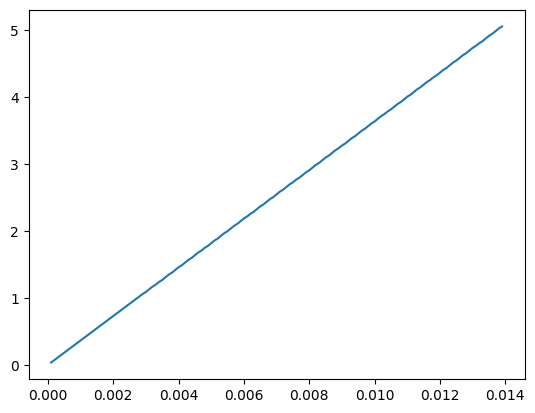

import itertools
import numpy as np
import pandas as pdCalculating line widths for flux maps
For this, rather than taking values from solutions the values are inputted manually from the escher maps. It would be better from the solution dfs but I don’t fancy coding this at the moment…
conditions_permutations = [
["blue", "white", "nops"],
["unconstrained", "constrained"],
["wt", "starchko"],
["fluxes", "minimum", "maximum"],
]
solutions_df_columns = pd.MultiIndex.from_product(
conditions_permutations, names=["Light", "ATPase", "Starch", "Solution"]
)
solutions_df = pd.DataFrame(columns=solutions_df_columns)
conditions_list_of_lists = [
["blue", "white", "nops"],
["unconstrained", "constrained"],
["wt", "starchko"],
]
conditions_iterations = list(itertools.product(*conditions_list_of_lists))
cols_to_drop = []
for conditions in conditions_iterations:
light_condition, atpase_condition, starch_condition = conditions
file_name = f"../outputs/model_solutions/{light_condition}_{atpase_condition}_{starch_condition}.csv"
try:
condition_df = pd.read_csv(file_name, index_col=0)
for col in ["fluxes", "minimum", "maximum"]:
solutions_df.loc[
:, (light_condition, atpase_condition, starch_condition, col)
] = condition_df.loc[:, col]
except:
cols_to_drop.append(conditions)
print(f"File {file_name} doesn't exist, skipping")
solutions_df_unphased = solutions_df.copy()
index_phased = pd.MultiIndex.from_tuples(
[
(reaction[:-2], int(reaction[-1]))
if reaction[-1] in ["1", "2", "3", "4"]
else (reaction, None)
for reaction in solutions_df.index
],
names=["Reaction", "Phase"],
)
solutions_df.index = index_phased
solutions_df = solutions_df.drop(cols_to_drop, axis=1)/tmp/ipykernel_4834/2276567288.py:27: DeprecationWarning: In a future version, `df.iloc[:, i] = newvals` will attempt to set the values inplace instead of always setting a new array. To retain the old behavior, use either `df[df.columns[i]] = newvals` or, if columns are non-unique, `df.isetitem(i, newvals)`
solutions_df.loc[
/tmp/ipykernel_4834/2276567288.py:27: DeprecationWarning: In a future version, `df.iloc[:, i] = newvals` will attempt to set the values inplace instead of always setting a new array. To retain the old behavior, use either `df[df.columns[i]] = newvals` or, if columns are non-unique, `df.isetitem(i, newvals)`
solutions_df.loc[
/tmp/ipykernel_4834/2276567288.py:27: DeprecationWarning: In a future version, `df.iloc[:, i] = newvals` will attempt to set the values inplace instead of always setting a new array. To retain the old behavior, use either `df[df.columns[i]] = newvals` or, if columns are non-unique, `df.isetitem(i, newvals)`
solutions_df.loc[
/tmp/ipykernel_4834/2276567288.py:27: DeprecationWarning: In a future version, `df.iloc[:, i] = newvals` will attempt to set the values inplace instead of always setting a new array. To retain the old behavior, use either `df[df.columns[i]] = newvals` or, if columns are non-unique, `df.isetitem(i, newvals)`
solutions_df.loc[
/tmp/ipykernel_4834/2276567288.py:27: DeprecationWarning: In a future version, `df.iloc[:, i] = newvals` will attempt to set the values inplace instead of always setting a new array. To retain the old behavior, use either `df[df.columns[i]] = newvals` or, if columns are non-unique, `df.isetitem(i, newvals)`
solutions_df.loc[
/tmp/ipykernel_4834/2276567288.py:27: DeprecationWarning: In a future version, `df.iloc[:, i] = newvals` will attempt to set the values inplace instead of always setting a new array. To retain the old behavior, use either `df[df.columns[i]] = newvals` or, if columns are non-unique, `df.isetitem(i, newvals)`
solutions_df.loc[
/tmp/ipykernel_4834/2276567288.py:27: DeprecationWarning: In a future version, `df.iloc[:, i] = newvals` will attempt to set the values inplace instead of always setting a new array. To retain the old behavior, use either `df[df.columns[i]] = newvals` or, if columns are non-unique, `df.isetitem(i, newvals)`
solutions_df.loc[
/tmp/ipykernel_4834/2276567288.py:27: DeprecationWarning: In a future version, `df.iloc[:, i] = newvals` will attempt to set the values inplace instead of always setting a new array. To retain the old behavior, use either `df[df.columns[i]] = newvals` or, if columns are non-unique, `df.isetitem(i, newvals)`
solutions_df.loc[
/tmp/ipykernel_4834/2276567288.py:27: DeprecationWarning: In a future version, `df.iloc[:, i] = newvals` will attempt to set the values inplace instead of always setting a new array. To retain the old behavior, use either `df[df.columns[i]] = newvals` or, if columns are non-unique, `df.isetitem(i, newvals)`
solutions_df.loc[
/tmp/ipykernel_4834/2276567288.py:27: DeprecationWarning: In a future version, `df.iloc[:, i] = newvals` will attempt to set the values inplace instead of always setting a new array. To retain the old behavior, use either `df[df.columns[i]] = newvals` or, if columns are non-unique, `df.isetitem(i, newvals)`
solutions_df.loc[
/tmp/ipykernel_4834/2276567288.py:27: DeprecationWarning: In a future version, `df.iloc[:, i] = newvals` will attempt to set the values inplace instead of always setting a new array. To retain the old behavior, use either `df[df.columns[i]] = newvals` or, if columns are non-unique, `df.isetitem(i, newvals)`
solutions_df.loc[
/tmp/ipykernel_4834/2276567288.py:27: DeprecationWarning: In a future version, `df.iloc[:, i] = newvals` will attempt to set the values inplace instead of always setting a new array. To retain the old behavior, use either `df[df.columns[i]] = newvals` or, if columns are non-unique, `df.isetitem(i, newvals)`
solutions_df.loc[solutions_df = solutions_df.xs("fluxes", level="Solution", axis=1).xs(2, level="Phase")solutions_df| Light | blue | white | nops | |||||||||
|---|---|---|---|---|---|---|---|---|---|---|---|---|
| ATPase | unconstrained | constrained | unconstrained | constrained | unconstrained | constrained | ||||||
| Starch | wt | starchko | wt | starchko | wt | starchko | wt | starchko | wt | starchko | wt | starchko |
| Reaction | ||||||||||||
| EX_X_pi_t_me | 0.000000 | 0.000000e+00 | 0.000000e+00 | 0.000000 | 0.000000e+00 | 0.000000 | 0.000000 | 0.000000e+00 | 0.000000 | 0.000000 | 0.000000 | 0.000000 |
| EX_X_pi_t_gc | 0.000000 | 0.000000e+00 | 0.000000e+00 | 0.000000 | 0.000000e+00 | 0.000000 | 0.000000 | 0.000000e+00 | 0.000000 | 0.000000 | 0.000000 | 0.000000 |
| EX_X_CO2_t_me | 4.128357 | 4.128357e+00 | 4.128356e+00 | 4.128355 | -5.388402e+01 | -53.884016 | -53.884016 | -5.388402e+01 | -53.884046 | -53.884046 | -53.884048 | -53.884048 |
| EX_X_CO2_t_gc | 0.003663 | 4.036220e-03 | 2.176874e-03 | 0.001631 | 1.156296e-03 | 0.001168 | -0.001087 | -1.371060e-03 | 0.002922 | 0.002922 | 0.001837 | 0.002173 |
| EX_X_Mg_t_me | 0.000000 | 0.000000e+00 | 0.000000e+00 | 0.000000 | 0.000000e+00 | 0.000000 | 0.000000 | 0.000000e+00 | 0.000000 | 0.000000 | 0.000000 | 0.000000 |
| ... | ... | ... | ... | ... | ... | ... | ... | ... | ... | ... | ... | ... |
| MAL_total_pseudolinker | 0.004445 | 4.525811e-03 | 2.358282e-03 | 0.001766 | 4.455754e-03 | 0.004487 | 0.000000 | -6.494415e-10 | 0.002314 | 0.002314 | 0.000918 | 0.002355 |
| FRU_total_pseudolinker | 0.000000 | 0.000000e+00 | 1.737018e-03 | 0.006863 | 0.000000e+00 | 0.000000 | 0.001898 | 6.805909e-03 | 0.000347 | 0.000347 | 0.004141 | 0.006863 |
| K_total_pseudolinker | 0.013250 | 1.303211e-02 | 9.057052e-03 | 0.005820 | 1.292071e-02 | 0.012970 | 0.005393 | 4.495170e-03 | 0.009849 | 0.009849 | 0.006187 | 0.005980 |
| Cl_total_pseudolinker | 0.011572 | 1.303197e-02 | 7.424397e-03 | 0.004597 | 1.292071e-02 | 0.012970 | 0.005393 | 4.495170e-03 | 0.008247 | 0.008247 | 0.004350 | 0.004350 |
| CIT_total_pseudolinker | 0.000000 | 4.690523e-08 | -4.632768e-10 | 0.000000 | -2.844564e-18 | 0.000000 | 0.000000 | 0.000000e+00 | 0.000000 | 0.000000 | 0.000000 | 0.000000 |
1774 rows × 12 columns
reaction_dict = {
"starch_to_glc": "RXN_1827_p_gc_2",
"starch_to_mal": "MALTODEG_RXN_c_gc_2",
#"starch_to_glc_mal": "MALTODEG_RXN_c_gc_2",
"mal_deg": "MALIC_NAD_RXN_m_gc_2",
"mal_v_c": "MAL_vc_gc_2",
"ps_to_suc": "SUCROSE_PHOSPHATE_SYNTHASE_RXN_c_gc_2",
#"ps_to_glc": "GLUC1PURIDYLTRANS_RXN_c_gc_2",
#"cit_to_mal": "FUMHYDR_RXN_m_gc_2",
"cit_to_mal": "SUCCCOASYN_RXN_m_gc_2",
"suc_c_v": "SUCROSE_PROTON_cv_gc_2",
"suc_v_deg": "RXN_1461_v_gc_2",
"suc_c_deg": "RXN_1461_c_gc_2",
"suc_to_fru": "SUCROSE_SYNTHASE_RXN_c_gc_2",
"cit_to_acon": "ACONITATEDEHYDR_RXN_c_gc_2",
"cit_synth": "CITSYN_RXN_m_gc_2",
}flux_dict = {
"blue": {
"unconstrained": {
"wt": dict(reaction_dict),
"starchko": dict(reaction_dict)
},
"constrained": {
"wt": dict(reaction_dict),
"starchko": dict(reaction_dict)
}
},
"white": {
"constrained": {
"wt": dict(reaction_dict),
"starchko": dict(reaction_dict)
}
},
"nops": {
"constrained": {
"wt": dict(reaction_dict),
"starchko": dict(reaction_dict)
}
}
}conditions_list_of_lists = [
["blue", "white", "nops"],
["unconstrained", "constrained"],
["wt", "starchko"],
]
conditions_iterations = list(itertools.product(*conditions_list_of_lists))solutions_df| Light | blue | white | nops | |||||||||
|---|---|---|---|---|---|---|---|---|---|---|---|---|
| ATPase | unconstrained | constrained | unconstrained | constrained | unconstrained | constrained | ||||||
| Starch | wt | starchko | wt | starchko | wt | starchko | wt | starchko | wt | starchko | wt | starchko |
| Reaction | ||||||||||||
| EX_X_pi_t_me | 0.000000 | 0.000000e+00 | 0.000000e+00 | 0.000000 | 0.000000e+00 | 0.000000 | 0.000000 | 0.000000e+00 | 0.000000 | 0.000000 | 0.000000 | 0.000000 |
| EX_X_pi_t_gc | 0.000000 | 0.000000e+00 | 0.000000e+00 | 0.000000 | 0.000000e+00 | 0.000000 | 0.000000 | 0.000000e+00 | 0.000000 | 0.000000 | 0.000000 | 0.000000 |
| EX_X_CO2_t_me | 4.128357 | 4.128357e+00 | 4.128356e+00 | 4.128355 | -5.388402e+01 | -53.884016 | -53.884016 | -5.388402e+01 | -53.884046 | -53.884046 | -53.884048 | -53.884048 |
| EX_X_CO2_t_gc | 0.003663 | 4.036220e-03 | 2.176874e-03 | 0.001631 | 1.156296e-03 | 0.001168 | -0.001087 | -1.371060e-03 | 0.002922 | 0.002922 | 0.001837 | 0.002173 |
| EX_X_Mg_t_me | 0.000000 | 0.000000e+00 | 0.000000e+00 | 0.000000 | 0.000000e+00 | 0.000000 | 0.000000 | 0.000000e+00 | 0.000000 | 0.000000 | 0.000000 | 0.000000 |
| ... | ... | ... | ... | ... | ... | ... | ... | ... | ... | ... | ... | ... |
| MAL_total_pseudolinker | 0.004445 | 4.525811e-03 | 2.358282e-03 | 0.001766 | 4.455754e-03 | 0.004487 | 0.000000 | -6.494415e-10 | 0.002314 | 0.002314 | 0.000918 | 0.002355 |
| FRU_total_pseudolinker | 0.000000 | 0.000000e+00 | 1.737018e-03 | 0.006863 | 0.000000e+00 | 0.000000 | 0.001898 | 6.805909e-03 | 0.000347 | 0.000347 | 0.004141 | 0.006863 |
| K_total_pseudolinker | 0.013250 | 1.303211e-02 | 9.057052e-03 | 0.005820 | 1.292071e-02 | 0.012970 | 0.005393 | 4.495170e-03 | 0.009849 | 0.009849 | 0.006187 | 0.005980 |
| Cl_total_pseudolinker | 0.011572 | 1.303197e-02 | 7.424397e-03 | 0.004597 | 1.292071e-02 | 0.012970 | 0.005393 | 4.495170e-03 | 0.008247 | 0.008247 | 0.004350 | 0.004350 |
| CIT_total_pseudolinker | 0.000000 | 4.690523e-08 | -4.632768e-10 | 0.000000 | -2.844564e-18 | 0.000000 | 0.000000 | 0.000000e+00 | 0.000000 | 0.000000 | 0.000000 | 0.000000 |
1774 rows × 12 columns
for light, light_dict in flux_dict.items():
for atpase, atpase_dict in light_dict.items():
for starch, starch_dict in atpase_dict.items():
for shorthand, reaction_name in starch_dict.items():
flux = solutions_df.loc[reaction_name[:-2],(light, atpase, starch)]
if abs(flux) < 1e-8:
flux = 0
flux_dict[light][atpase][starch][shorthand] = fluxsolutions_df.loc["GLUC1PURIDYLTRANS_RXN_c_gc"]Light ATPase Starch
blue unconstrained wt 1.190563e-04
starchko 1.960967e-04
constrained wt -4.632788e-10
starchko 2.462117e-12
white unconstrained wt 4.278484e-04
starchko 4.304933e-04
constrained wt -9.054699e-04
starchko 1.142550e-04
nops unconstrained wt -1.310427e-04
starchko -1.310166e-04
constrained wt 0.000000e+00
starchko 0.000000e+00
Name: GLUC1PURIDYLTRANS_RXN_c_gc, dtype: float64flux_dict{'blue': {'unconstrained': {'wt': {'starch_to_glc': 0,
'starch_to_mal': 0,
'mal_deg': 0,
'mal_v_c': 0.0084862683952195,
'ps_to_suc': 0.0001190562980565,
'cit_to_mal': 0.0013558713124941,
'suc_c_v': 0,
'suc_v_deg': 0,
'suc_c_deg': 0,
'suc_to_fru': 0,
'cit_to_acon': 0.0013558713124941,
'cit_synth': 0.000237558821619},
'starchko': {'starch_to_glc': 0,
'starch_to_mal': 0,
'mal_deg': 0.0006650467732122,
'mal_v_c': 0.010648966832743,
'ps_to_suc': 0.0001960966512218,
'cit_to_mal': 0.0008129115147968,
'suc_c_v': 0,
'suc_v_deg': 0,
'suc_c_deg': 0,
'suc_to_fru': 0,
'cit_to_acon': 0,
'cit_synth': 0.0008130053252513}},
'constrained': {'wt': {'starch_to_glc': 0.0051260186331311,
'starch_to_mal': 0,
'mal_deg': 0,
'mal_v_c': 0.0036281277404994,
'ps_to_suc': 0,
'cit_to_mal': 0.0010884364690379,
'suc_c_v': 0,
'suc_v_deg': 0.0034740356910968,
'suc_c_deg': 0,
'suc_to_fru': 0,
'cit_to_acon': 0.0010884373955896,
'cit_synth': 0},
'starchko': {'starch_to_glc': 0,
'starch_to_mal': 0,
'mal_deg': 0,
'mal_v_c': 0.0027176388646845,
'ps_to_suc': 0,
'cit_to_mal': 0.0008152916495569,
'suc_c_v': 0,
'suc_v_deg': 0.013726072962268,
'suc_c_deg': 0,
'suc_to_fru': 0,
'cit_to_acon': 0.0008152916544811,
'cit_synth': 0}}},
'white': {'constrained': {'wt': {'starch_to_glc': 0.0054174157446452,
'starch_to_mal': 0,
'mal_deg': 0,
'mal_v_c': 0,
'ps_to_suc': 0.0010865638814297,
'cit_to_mal': 0,
'suc_c_v': 0,
'suc_v_deg': 0.0018046775864697,
'suc_c_deg': 0,
'suc_to_fru': 0.0019920337826212,
'cit_to_acon': 0,
'cit_synth': 0},
'starchko': {'starch_to_glc': 0,
'starch_to_mal': 0,
'mal_deg': 0,
'mal_v_c': 0,
'ps_to_suc': 0.0001142549771026,
'cit_to_mal': 0,
'suc_c_v': 0,
'suc_v_deg': 0.0136118179802412,
'suc_c_deg': 0,
'suc_to_fru': 0,
'cit_to_acon': 0,
'cit_synth': 0}}},
'nops': {'constrained': {'wt': {'starch_to_glc': 0.0025691232468596,
'starch_to_mal': 0.0003061234489482,
'mal_deg': 0,
'mal_v_c': 0,
'ps_to_suc': 0,
'cit_to_mal': 0.0012244940670225,
'suc_c_v': 0.0029878403954816,
'suc_v_deg': 0.0029878403954816,
'suc_c_deg': 0.0052938626191942,
'suc_to_fru': 0,
'cit_to_acon': 0.0012244937957926,
'cit_synth': 0},
'starchko': {'starch_to_glc': 0,
'starch_to_mal': 0,
'mal_deg': 0,
'mal_v_c': 0.003622478194246,
'ps_to_suc': 0,
'cit_to_mal': 0.0010867432486121,
'suc_c_v': 0.0061093909571672,
'suc_v_deg': 0.0096469801196154,
'suc_c_deg': 0.0040790928377284,
'suc_to_fru': 0,
'cit_to_acon': 0.0010867432486121,
'cit_synth': 0}}}}from sigfig import rounddef NestedDictValues(d):
for v in d.values():
if isinstance(v, dict):
yield from NestedDictValues(v)
else:
yield vmin_flux = np.array(list(NestedDictValues(flux_dict))).min()
min_flux0.0max_flux = np.array(list(NestedDictValues(flux_dict))).max()
max_flux0.013726072962268max_flux/min_flux/tmp/ipykernel_4834/4031404064.py:1: RuntimeWarning: divide by zero encountered in scalar divide
max_flux/min_fluxinfSo we have a 50-fold difference between the smallest and largest flux. 5mm in the inkscape figures that I’ve created is probably the max I can do, so 0.1 is the minimum.
Inkscape will only do widths to nearest 0.01mm I think, but allows you to input 3 numbers after the dp.
def convert_fluxes_to_widths_linear(flux):
max_width_in_inkscape = 5
conversion = max_width_in_inkscape/max_flux
new_flux = conversion*flux
new_flux_rounded = round(new_flux, 3)
return new_flux_roundedimport matplotlib.pyplot as pltx = np.arange(0.0001, 0.014, 0.0001)
y = [convert_fluxes_to_widths_linear(flux) for flux in x]
plt.plot(x, y)
import copydef convert_flux_dict(flux_dict):
converted_dict = copy.deepcopy(flux_dict)
for light_value, light_dict in flux_dict.items():
for atpase_constraint, atpase_dict in light_dict.items():
for phenotype, phenotype_dict in atpase_dict.items():
for reaction, reaction_value in phenotype_dict.items():
converted_dict[light_value][atpase_constraint][phenotype][reaction] = convert_fluxes_to_widths_linear(
reaction_value)
return converted_dictconverted_dict = convert_flux_dict(flux_dict)/home/maurice/miniconda3/envs/mmon-gcm/lib/python3.9/site-packages/sigfig/sigfig.py:586: UserWarning: warning: 3 significant figures requested from number with only 1 significant figures
warn("warning: %d significant figures requested from number with only %d significant figures" % (given['sigfigs'], len(num.map)))
/home/maurice/miniconda3/envs/mmon-gcm/lib/python3.9/site-packages/sigfig/sigfig.py:586: UserWarning: warning: 3 significant figures requested from number with only 2 significant figures
warn("warning: %d significant figures requested from number with only %d significant figures" % (given['sigfigs'], len(num.map)))for light, light_dict in converted_dict.items():
for atpase, atpase_dict in light_dict.items():
for starch, starch_dict in atpase_dict.items():
print(f"{light}_{atpase}_{starch}:")
for shorthand, mm in starch_dict.items():
if mm > 0:
#print(f"{shorthand} should be {mm}mm wide")
print(f"{shorthand} should be {mm*175}%")
print("\n")blue_unconstrained_wt:
mal_v_c should be 540.75%
ps_to_suc should be 7.595%
cit_to_mal should be 86.45%
cit_to_acon should be 86.45%
cit_synth should be 15.1375%
blue_unconstrained_starchko:
mal_deg should be 42.35%
mal_v_c should be 679.0%
ps_to_suc should be 12.495000000000001%
cit_to_mal should be 51.8%
cit_synth should be 51.8%
blue_constrained_wt:
starch_to_glc should be 327.25%
mal_v_c should be 231.0%
cit_to_mal should be 69.3%
suc_v_deg should be 222.25%
cit_to_acon should be 69.3%
blue_constrained_starchko:
mal_v_c should be 173.25%
cit_to_mal should be 51.974999999999994%
suc_v_deg should be 875.0%
cit_to_acon should be 51.974999999999994%
white_constrained_wt:
starch_to_glc should be 344.75%
ps_to_suc should be 69.3%
suc_v_deg should be 114.97500000000001%
suc_to_fru should be 127.05%
white_constrained_starchko:
ps_to_suc should be 7.279999999999999%
suc_v_deg should be 868.0%
nops_constrained_wt:
starch_to_glc should be 163.8%
starch_to_mal should be 19.6%
cit_to_mal should be 78.05%
suc_c_v should be 190.75%
suc_v_deg should be 190.75%
suc_c_deg should be 337.75%
cit_to_acon should be 78.05%
nops_constrained_starchko:
mal_v_c should be 231.0%
cit_to_mal should be 69.3%
suc_c_v should be 390.25%
suc_v_deg should be 614.25%
suc_c_deg should be 260.75%
cit_to_acon should be 69.3%
For the key:
import cobra
import pandas as pd
from mmon_gcm.supermodel import SuperModelparameters_df = pd.read_csv("../inputs/arabidopsis_parameters.csv", index_col=0)
four_stage_GC_model = cobra.io.sbml.read_sbml_model("../models/4_stage_GC.xml") # read model
arabidopsis_supermodel = SuperModel(parameters_df.loc[:, "Value"], fba_model=four_stage_GC_model);No objective coefficients in model. Unclear what should be optimizedarabidopsis_supermodel.N_gcs580000000.00.01/arabidopsis_supermodel.N_gcs1.724137931034483e-11moles_gc_h = 10 * 10 ** -15 # fmolesgc-1h-1moles_m2_h = moles_gc_h*arabidopsis_supermodel.N_gcs # molesh-1mmoles_m2_h = moles_m2_h * 10 ** 3
mmoles_m2_h0.005800000000000001f"{convert_fluxes_to_widths_linear(mmoles_m2_h)}mm for a flux of 10 fmoles gc-1 h-1"'2.11mm for a flux of 10 fmoles gc-1 h-1'